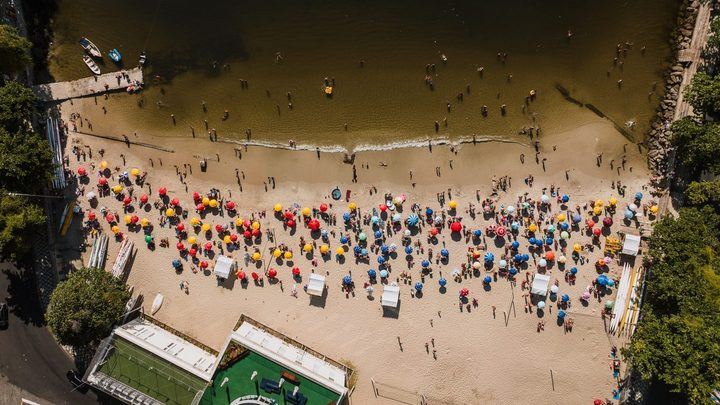
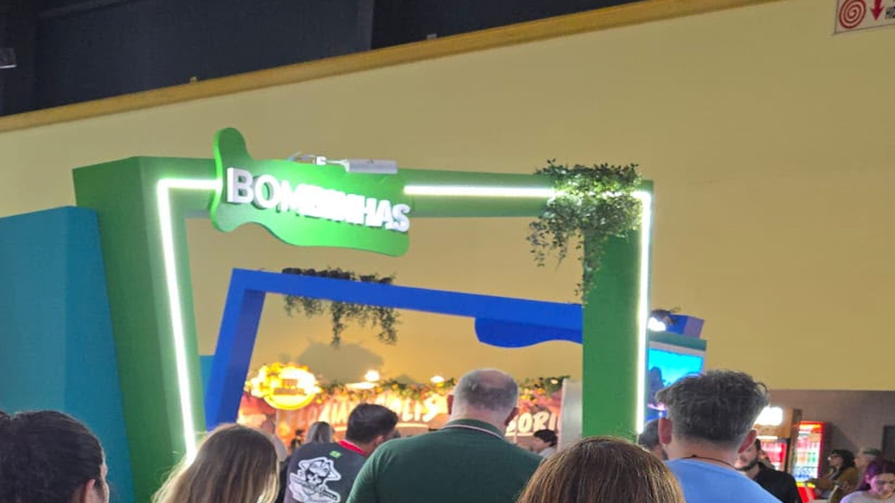

Itapema · TurismoTurista que veio a Itapema no verão gastou R$ 1.858 por dia em grupo, e 1 em cada 4 era argentino: os números da pesquisa que está dentro do novo Plano de Turismo
As pesquisas de demanda do consórcio, lidas uma a uma.
A Câmara de Itapema aprovou na terça, 29 de setembro, por 11 votos a favor, nenhum contra e nenhuma abstenção, o projeto que ratifica o novo contrato do CITMAR, o consórcio de turismo que junta dez cidades daqui. Fomos atrás de quanto isso custa. Abrimos os dez contratos de rateio de 2026, um por cidade, e somamos: o consórcio funciona neste ano com R$ 1.546.010,86, e Itapema entra com R$ 169.047,93, o terceiro maior valor, atrás de Balneário Camboriú e Itajaí. Dividido pela população, dá R$ 1,90 por morador de Itapema no ano, contra R$ 5,27 em Bombinhas. Essa soma não existe pronta em lugar nenhum, e foi feita aqui.
Em 30 segundos · Modo de Leitura, formato original Santa Informa
Dez cidades do litoral mantêm um consórcio de turismo juntas.
O nome dele é CITMAR, Costa Verde e Mar.
Itapema está nele desde dezembro de 2011.
Cada cidade paga uma parte por ano.
Isso se chama contrato de rateio.
Nós abrimos os dez contratos de 2026.
A conta total é R$ 1.546.010,86.
Itapema paga R$ 169.047,93.
É o terceiro maior valor dos dez.
Balneário Camboriú paga R$ 338.324,41.
Itajaí paga R$ 187.759,77.
Bombinhas paga R$ 156.615,97.
Porto Belo paga R$ 131.624,14.
Ilhota paga o menor, R$ 74.975,76.
Por morador, Itapema fica em R$ 1,90 no ano.
Bombinhas fica em R$ 5,27.
Porto Belo, em R$ 4,04.
Balneário Camboriú, em R$ 2,19.
Essa divisão por morador é conta nossa.
Na terça a Câmara votou o contrato novo do consórcio.
Foram 11 votos a favor e nenhum contra.
Uma cadeira ficou ausente.
O contrato mudou por ordem do Tribunal de Contas de Santa Catarina.
O consórcio precisou arrumar as próprias regras.
A assembleia das cidades aprovou o texto em 31 de julho.
Itapema levou 54 dias para mandar o projeto.
E a Câmara votou 6 dias depois, com pedido de urgência.
O dinheiro paga o que o consórcio faz pelas cidades.
Nesta semana, por exemplo, o estande em Buenos Aires.
Itapema, Porto Belo e Bombinhas foram juntas.
As três somam R$ 457.288,04 do rateio.
TurismoPublicada em Redação Santa Informa

Existe um consórcio público que junta dez prefeituras do litoral para vender a região como destino turístico. Chama-se CITMAR, Costa Verde e Mar, tem sede em Itajaí e Itapema entrou nele pela Lei municipal 3.021, de dezembro de 2011. Na terça, 29 de setembro, a Câmara ratificou o contrato novo do consórcio, em votação única, com 11 votos a favor, nenhum contra, nenhuma abstenção e uma ausência. A pergunta que a votação não respondeu é simples: quanto isso custa para a cidade. Fomos abrir os documentos.
Cada cidade consorciada assina todo ano um contrato de rateio, que é o papel onde está o valor da sua parte. O CITMAR publica esses contratos um a um no Diário Oficial dos Municípios, sem tabela e sem total. Abrimos os dez de 2026 e somamos: R$ 1.546.010,86. Itapema entra com R$ 169.047,93, ou 10,93% do bolo, o terceiro maior valor. À frente ficam Balneário Camboriú, com R$ 338.324,41, e Itajaí, com R$ 187.759,77. Atrás vêm Bombinhas (R$ 156.615,97), Penha e Porto Belo (R$ 131.624,14 cada), Balneário Piçarras (R$ 130.983,24), Camboriú e Navegantes (R$ 112.527,75 cada) e Ilhota, que paga o menor valor, R$ 74.975,76. Dividindo pela população que o IBGE estima para 2026, Itapema fica em R$ 1,90 por morador no ano, Balneário Camboriú em R$ 2,19, Porto Belo em R$ 4,04 e Bombinhas em R$ 5,27, quase o triplo do nosso. Essa divisão é conta nossa e serve de régua: cidade pequena paga rateio parecido e tem menos gente para dividir.
A mudança não nasceu de vontade das prefeituras. O próprio projeto diz que ela vem das adequações que o Tribunal de Contas de Santa Catarina determinou, no processo @RLI 21-00731011, e que o consórcio apresentou um plano de ação que o tribunal acompanha. Na prática, o CITMAR teve de arrumar a natureza jurídica, o nome, as regras de entrada e saída de cidade, as competências da assembleia e da diretoria e as normas de licitação compartilhada. A assembleia das cidades aprovou o texto em 31 de julho. A Prefeitura de Itapema protocolou o projeto na Câmara em 23 de setembro, 54 dias depois, e pediu urgência na segunda-feira à tarde. A Casa votou na terça, seis dias após a chegada do texto.
Enquanto o projeto tramitava, o consórcio estava trabalhando. Entre 26 e 29 de setembro, Itapema dividiu estande com Porto Belo e Bombinhas na Feira Internacional de Turismo, em Buenos Aires, levando junto gente da hotelaria daqui. As três cidades desse estande somam R$ 457.288,04 de rateio, quase 30% do orçamento do consórcio. O CITMAR também faz as pesquisas de demanda que o Plano Municipal de Turismo de Itapema usa como base, e foi numa delas, a do verão de 2026, que apareceu o dado que explica a viagem à Argentina: 25,4% dos turistas entrevistados aqui eram argentinos.
O resumo de 30 segundos está no topo e a versão completa é o texto acima. Aqui ficam as três leituras da casa sobre o mesmo assunto.
Clara, a otimista
R$ 1,90 por morador no ano. É o preço de um pão francês e meio para ter a cidade num estande em Buenos Aires, ao lado de Porto Belo e Bombinhas, disputando o turista argentino que já é um em cada quatro dos que chegam aqui no verão.
E tem uma coisa bonita nesse arranjo que passa despercebida. Itapema sozinha não abriria estande em feira internacional. Bombinhas também não. Juntas, com mais oito, abrem. Consórcio é isso, e esse está de pé desde 2011.
Seu Prudêncio, o criterioso
Merece atenção o caminho do projeto. A assembleia aprovou o texto em 31 de julho, e o projeto chegou à Câmara em 23 de setembro. São 54 dias de gaveta, e no fim o Executivo pediu urgência para votar em seis. Quando a pressa aparece só no último trecho de um trâmite longo, sobra pouco tempo para a comissão ler um contrato inteiro de consórcio.
Vale acompanhar também o critério do rateio, que não está em nenhum dos dez contratos publicados. Saber que Itapema paga R$ 169 mil é metade da informação. A outra metade é saber por quê, e essa a gente pediu. Uma sugestão útil ao consórcio: publicar a memória de cálculo junto com os extratos resolveria isso de uma vez, e ainda ajudaria o Tribunal de Contas, que já está de olho na casa.
Dito isso, o essencial está certo. O consórcio publica os dez contratos no Diário Oficial, com valor, vigência e data de assinatura, e por isso esta matéria foi possível. Corrigiu o próprio erro por errata quando errou. E a ratificação passou pela Câmara, que é onde tem de passar. O caminho é o caminho.
Caco, o sarcástico
Para descobrir quanto custa o consórcio de turismo eu precisei abrir dez documentos, um de cada cidade, sendo que sete são arquivo do Word de 2003 e três são PDF. Nenhum traz o total. É como comprar uma pizza dividida em dez e cada fatia vir com a nota fiscal separada.
O melhor foi a errata. O consórcio corrigiu cinco contratos de uma vez, e no de Penha escreveu Navegantes. Corrigir errado é um talento que não se ensina.
No fim das contas eu não tenho do que reclamar. R$ 1,90 por ano é barato para qualquer coisa neste país, e pelo menos dessa vez o dinheiro foi para Buenos Aires trabalhar, e não passear.
Fontes: o fato novo é a aprovação do Projeto de Lei Ordinária 601/2026 na Câmara de Itapema, cuja ficha traz o placar de 11 a 0, o trâmite dia a dia e o pedido de urgência do Executivo, e cujo texto integral com a Mensagem 040/2026 cita a determinação do Tribunal de Contas de Santa Catarina e a revogação da Lei municipal 3.021, de 2011. A assembleia de 31 de julho está no Edital de Convocação 004/2026 do CITMAR. Os valores de 2026 saem dos dez extratos de contrato de rateio publicados pelo consórcio no Diário Oficial dos Municípios de Santa Catarina: Balneário Camboriú, Balneário Piçarras, Bombinhas, Camboriú, Ilhota, Itajaí, Itapema, Navegantes, Penha e Porto Belo. As parcelas de Itapema e o nome trocado no documento de Penha estão nas erratas de Itapema e Penha. O estande em Buenos Aires foi anunciado pela Prefeitura de Itapema em 29 de setembro. A população de cada cidade é a estimativa de 2026 do IBGE, tabela 6579. A soma dos dez contratos, a fatia de cada cidade e o custo por morador são contas nossas. Sobre o mesmo assunto, veja a pesquisa de demanda do consórcio dentro do Plano Municipal de Turismo de Itapema e o consórcio de saúde que a cidade mantém com outras dez prefeituras.

Itapema · TurismoAs pesquisas de demanda do consórcio, lidas uma a uma.
O outro consórcio que a cidade mantém.
A mesma régua, aplicada à folha de pagamento.